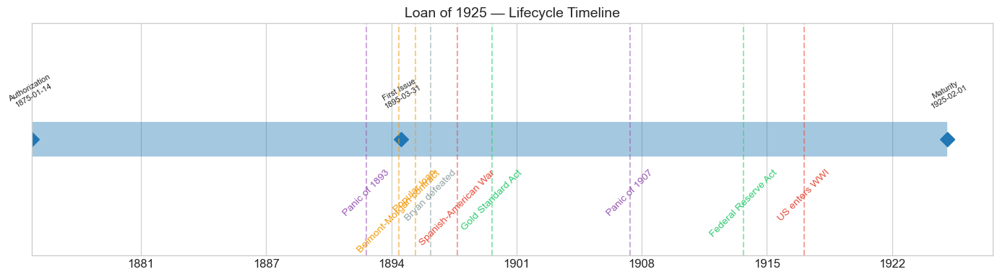
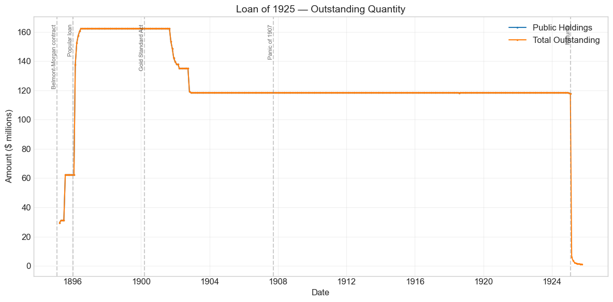
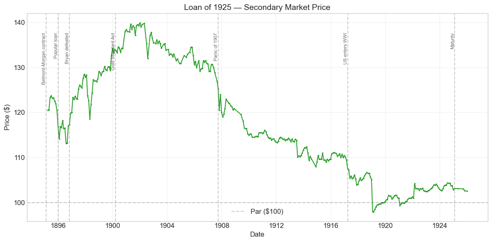
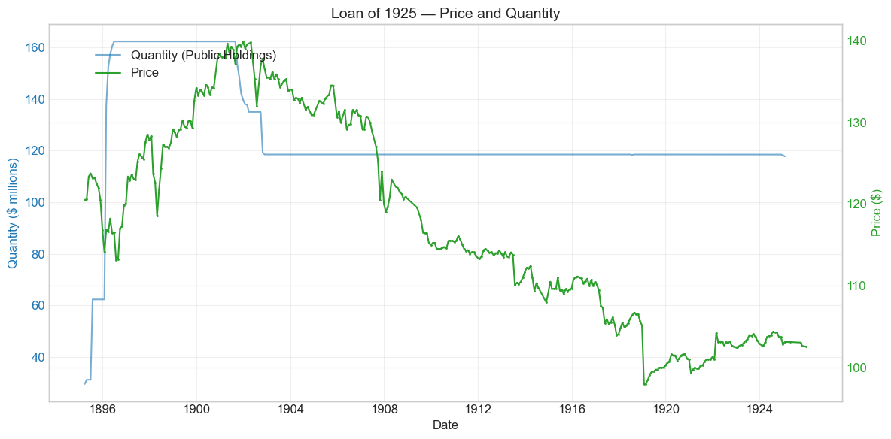
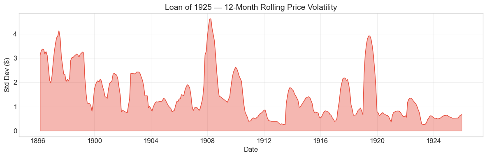

Bond Biography: Loan of 1925#
The Bonds That Defended the Gold Reserve#
An enhanced chapter from the Hall-Payne-Sargent US Federal Bond Database (2,857 issues, 1776–1960)
Bond ID (L1): 20129 | Category: Interest Bearing > Marketable > Long Term Bond
import pandas as pd
import numpy as np
import matplotlib.pyplot as plt
import matplotlib.patches as mpatches
import datetime
import warnings
warnings.filterwarnings('ignore')
plt.style.use('seaborn-v0_8-whitegrid')
plt.rcParams.update({'figure.figsize': (12, 6), 'font.size': 12,
'axes.titlesize': 14, 'axes.labelsize': 12})
# Load the bond database
store = pd.HDFStore('../data/BondDF.h5', mode='r')
BondList = store['BondList']
BondQuant = store['BondQuant']
BondPrice = store['BondPrice']
store.close()
BondQuant_T = BondQuant.transpose()
BondPrice_T = BondPrice.transpose()
bond_id = 20129
print(f'Loaded data for: Loan of 1925 (ID: 20129)')
/Users/thomassargent/anaconda3/lib/python3.9/site-packages/pandas/core/arrays/masked.py:60: UserWarning: Pandas requires version '1.3.6' or newer of 'bottleneck' (version '1.3.5' currently installed).
from pandas.core import (
Loaded data for: Loan of 1925 (ID: 20129)
Overview: Borrowing to Stay on Gold#
The Loan of 1925 — the thirty-year 4 percent gold-defense bonds of the Cleveland administration — was born of an emergency unlike any other in this database. The United States in 1895 was not at war, was not refunding old debt, and was not buying territory. It was, instead, watching the metallic foundation of its currency drain away through the doors of the New York Subtreasury, and it sold these bonds for one purpose only: to buy gold.
The legal instrument was an old one. The Resumption Act of January 14, 1875 — the statute that had committed the Treasury to redeem greenbacks in coin from January 1, 1879 — authorized the Secretary of the Treasury to sell bonds of the descriptions created by the Refunding Act of 1870 “to maintain such redemption.” For twenty years the clause lay dormant. Then, in the crisis that followed the Panic of 1893, with Congress deadlocked between gold and silver men and unwilling to grant any new borrowing authority, Presidents found that this Reconstruction-era remnant was the only borrowing power the executive possessed. President Cleveland and Secretary John G. Carlisle used it four times between January 1894 and February 1896. The first two sales, of 5 percent ten-year bonds, belong to the story of the Loan of 1904; the last two — the notorious February 1895 contract with the Belmont–Morgan syndicate and the January 1896 popular loan — created the $162 million of 4 percent thirty-year bonds traced in this chapter.
No bond in the database is more politically charged. The 1895 contract put J. P. Morgan and the Rothschilds’ American agent between the United States Treasury and insolvency, made the syndicate a conspicuous profit, and handed the free-silver movement its most durable piece of evidence that the government had been captured by Wall Street and Lombard Street. The 1896 loan, offered directly to the public over the syndicate’s head, was the administration’s answer to that storm. The bond then lived on for another twenty-nine years — through Bryan’s campaigns, the Gold Standard Act, the Panic of 1907, and a World War that made its once-handsome 4 percent coupon look antique — before being paid off quietly at maturity, on February 1, 1925, by Andrew Mellon’s Treasury. Its 336 monthly price observations, running unbroken from 1895 to 1925, form one of the longest continuous series in the database: a single security’s eye-view of the entire close of the classical gold-standard era.
During its lifetime on the secondary market the bond’s average price was $116.87, ranging from $98.00 to $139.88; peak outstanding reached $162.32 million on June 30, 1896.
Historical Context: The Endless Chain and Its Consequences#
The following major events framed this bond’s lifetime:
Date |
Event |
Category |
|---|---|---|
1893-05 to 1897 |
Panic of 1893 and depression |
Crisis |
1893-11-01 |
Repeal of the Sherman Silver Purchase Act |
Monetary |
1895-02-08 |
Belmont–Morgan syndicate contract |
Fiscal |
1896-01-06 |
$100 million popular loan announced |
Fiscal |
1896-11-03 |
McKinley defeats Bryan |
Political |
1898-04-25 to 1898-08-12 |
Spanish-American War |
War |
1900-03-14 |
Gold Standard Act |
Legislation |
1907-10 to 1908-02 |
Panic of 1907 |
Crisis |
1913-12-23 |
Federal Reserve Act |
Legislation |
1917-04-06 to 1918-11-11 |
World War I (US participation) |
War |
1925-02-01 |
Maturity; loan paid off |
Fiscal |
The mechanics of the drain: the “endless chain”#
To understand why this bond exists, one must understand a piece of monetary plumbing. The Treasury of the 1890s stood behind two great masses of paper — the Civil War greenbacks (about $346 million of United States notes) and the Treasury notes of 1890 issued to pay for silver under the Sherman Silver Purchase Act — both redeemable in “coin,” which in practice meant gold. But the law required that redeemed greenbacks be reissued, not retired. A holder could present notes at the Subtreasury, draw out gold, and export it or hoard it; the notes went back into circulation through government disbursements, were presented again, and drew out more gold. Contemporaries called it the endless chain. Since the resumption era, a gold reserve of $100 million had been regarded as the minimum safeguard of the whole structure; it fell below that line in April 1893, and once the Panic of 1893 destroyed confidence, the chain ran with terrible efficiency. The companion chapter on the Four Percent Loan of 1907 (Bond 20121) tells the story of the panic itself and of the first two bond sales of 1894, which raised gold only to watch it drain out again — because the very notes paid in for the bonds were promptly re-presented for redemption. By late January 1895 withdrawals were running at millions of dollars a day, and the reserve was falling toward $40 million. On some estimates the Treasury was within weeks — perhaps days — of being unable to redeem in gold, which would have meant, in the language of the day, going off the gold standard by default.
February 1895: the Belmont–Morgan contract#
Congress, split between gold and silver men, refused every administration request for authority to sell explicitly gold bonds. On February 8, 1895, Cleveland and Carlisle therefore signed a contract of a very different kind, negotiated in person at the White House with J. Pierpont Morgan and August Belmont, Jr. (whose house acted for the London and Paris Rothschilds). The syndicate agreed to sell the Treasury approximately 3.5 million ounces of gold coin — roughly $65 million — and to take payment not in cash but in about $62.3 million of 4 percent thirty-year coin bonds at 104½, an effective yield to the syndicate of about 3¾ percent. Two features made the contract unique in American finance. First, at least half of the gold was to come from Europe, attacking the drain at its source. Second, the syndicate covenanted, so far as lay within its power, to protect the Treasury against gold withdrawals for the duration of the contract — in effect, a private banking syndicate undertook to manage the foreign exchanges of the United States, and for several months it did so successfully. The legal basis Morgan himself is said to have supplied in the White House meeting: an all-but-forgotten Civil War provision (Section 3700 of the Revised Statutes) permitting the Secretary of the Treasury to purchase coin with bonds on such terms as he found most advantageous.
The contract contained one more clause that measures the politics of the moment. If Congress would authorize bonds payable explicitly in gold within a short window, the syndicate would accept them at a 3 percent coupon instead of 4. Cleveland’s message to Congress of February 8, 1895 reported the clause and put the saving at $539,159 a year, or $16,174,770 over thirty years — the price of the word “coin” over the word “gold.” Congress did not authorize the gold bonds.
The operation worked. The gold came in, largely from abroad; the reserve recovered; the exchanges were held; the immediate crisis passed. It was also spectacularly profitable for the underwriters. The syndicate offered the bonds publicly on February 20, 1895 at 112¼ — nearly eight points above its cost — and the subscription books closed almost immediately, reportedly within about twenty minutes in London and within a couple of hours in New York; the price in the open market moved higher still, and our series opens in March 1895 at $120.50. How much the syndicate ultimately cleared has never been established — its own accounts were not disclosed, and estimates ranged at the time, and range still, from well under $2 million to figures many times that — but the visible eight-point markup was enough. To the silver and populist press, and to a large part of the Democratic party, the episode was proof that the government had been rescued — or fleeced — by a secret bargain with Morgan and the Rothschilds. Joseph Pulitzer’s World hammered the deal daily and insisted that a public offering would have done better; congressional investigation followed; and William Jennings Bryan was among those who denounced the contract on the floor of the House. Cleveland never conceded an inch, maintaining to the end of his life that the contract had saved the nation’s credit at the only terms obtainable in the time available.
January 1896: the popular loan#
When the syndicate’s protection lapsed and the drain resumed late in 1895 — aggravated in December by the war scare with Britain over Cleveland’s Venezuela boundary message, which set off a stock-market break and fresh gold exports — the Treasury had to borrow a fourth time. This time the method was the message. On January 6, 1896 the Treasury announced $100 million of the same 4 percent thirty-year bonds for public subscription, bids to be opened in early February, with the understanding that none would be accepted below roughly 110.7 — approximately the price at which the loan yielded what the market then demanded. Morgan organized a syndicate to bid for the entire issue as a backstop, at that minimum; but thousands of bids came in from banks and private citizens across the country, most of the loan was allotted above the minimum, and the average price realized ran a little above 111. The point was made in both directions: the government demonstrated that it could borrow gold from its own citizens without an intermediary’s markup, and the market demonstrated that what it had charged the syndicate in 1895 reflected the genuine risk of that desperate winter rather than mere extortion. The proceeds carried the reserve through the election year. In all, the four Cleveland-era sales of 1894–96 raised about $262 million of bonds to hold a $100 million gold reserve — the fiscal cost of defending a currency whose legal foundations Congress would not repair.
The bond as a gold-risk barometer, 1895–1896#
Because the Loan of 1925 was payable in “coin,” its price embodied the market’s estimate of whether that coin would be gold or, someday, depreciated silver. The series shows exactly what that meant in practice. From $123–124 in mid-1895 the price sagged as the reserve crisis rebuilt, dropping to $114 in January 1896; it recovered on the success of the popular loan, then sagged again to its early-life low of about $113 in July–August 1896 — the weeks in which the Democratic convention adopted a free-silver platform and nominated Bryan on the “Cross of Gold” speech. A Bryan victory was understood to mean silver payments. Between June and August 1896 the 4s lost about 2.8 percent of their price, slightly less than the 3.7 percent lost by the ten-year 5s of 1904 (Bond 20128); the shorter bond’s yield rose more. McKinley’s victory on November 3, 1896 resolved the question: the price regained $120 by December and never looked back, climbing with barely a pause to $130 by 1899.
The calm after 1900#
The Gold Standard Act of March 14, 1900 wrote the verdict of 1896 into law and removed the last doubt about the meaning of “coin.” The Loan of 1925 was not among the issues refundable into the new 2 percent Consols of 1930 (that exchange took the 5s of 1904, 4s of 1907, and 3s of 1908 — see the companion chapters on Bonds 20121 and 20131), so it simply rode the new era upward, reaching its all-time peak of $139.88 in December 1901 amid gold abundance, budget surpluses, and very low yields on government paper. Thereafter its price history is mostly arithmetic — the slow amortization of a huge premium toward par at a fixed 1925 maturity — with the era’s shocks superimposed: a visible but modest dip in the money-market stringency of the Panic of 1907 (from about $129 early that year to $120 in October), and a much deeper mark from World War I, when Liberty bonds at 3½–4¼ percent and sharply higher market rates made a seasoned 4 percent bond ordinary. The war and its aftermath carried the price from $112 in early 1914 down through the entire remaining premium: in January 1919 the bond touched $98.00 — the only months of its thirty-year life below par — before the approach of maturity pulled it back above 100 for its final six years.
# Bond Lifecycle Timeline
fig, ax = plt.subplots(figsize=(14, 4))
# Key dates
dates = [('Authorization', '1875-01-14'), ('First Issue', '1895-03-31'), ('Maturity', '1925-02-01')]
events = [('Panic of 1893', '1893-05-05', 'crisis'), ('Belmont-Morgan contract', '1895-02-08', 'monetary'), ('Popular loan', '1896-01-06', 'monetary'), ('Bryan defeated', '1896-11-03', 'other'), ('Spanish-American War', '1898-04-25', 'war'), ('Gold Standard Act', '1900-03-14', 'legislation'), ('Panic of 1907', '1907-10-01', 'crisis'), ('Federal Reserve Act', '1913-12-23', 'legislation'), ('US enters WWI', '1917-04-06', 'war')]
import matplotlib.dates as mdates
from datetime import datetime
# Plot bond lifetime bar
d0 = datetime.strptime(dates[0][1], '%Y-%m-%d')
d1 = datetime.strptime(dates[-1][1], '%Y-%m-%d')
ax.barh(0, (d1 - d0).days, left=mdates.date2num(d0), height=0.3,
color='#1f77b4', alpha=0.4, label='Bond Lifetime')
# Mark key dates
for label, date_str in dates:
d = datetime.strptime(date_str, '%Y-%m-%d')
ax.plot(mdates.date2num(d), 0, 'D', color='#1f77b4', markersize=10)
ax.annotate(f'{label}\n{date_str}', (mdates.date2num(d), 0.25),
ha='center', va='bottom', fontsize=8, rotation=30)
# Mark historical events
colors = {'war': '#e74c3c', 'crisis': '#9b59b6', 'legislation': '#2ecc71', 'other': '#95a5a6', 'monetary': '#f39c12'}
for name, date_str, cat in events:
d = datetime.strptime(date_str, '%Y-%m-%d')
ax.axvline(mdates.date2num(d), color=colors.get(cat, 'gray'), alpha=0.5, linestyle='--')
ax.annotate(name, (mdates.date2num(d), -0.25), ha='center', va='top',
fontsize=10, rotation=45, color=colors.get(cat, 'gray'))
ax.set_yticks([])
ax.xaxis.set_major_formatter(mdates.DateFormatter('%Y'))
ax.set_title('Loan of 1925 — Lifecycle Timeline')
ax.set_ylim(-1, 1)
plt.tight_layout()
plt.show()

Bond Features#
Feature |
Detail |
|---|---|
Name |
Loan of 1925 (“4s of 1925”) |
Authorizing Act |
Resumption Act of January 14, 1875 (bond descriptions of the Refunding Act of 1870) |
First Issue Date |
March 31, 1895 (contract signed February 8, 1895) |
Term |
30 years, maturing February 1, 1925 |
Coupon Rate |
4.0% |
Payment Frequency |
Quarterly (4 times/year) |
Callable |
No — a fixed-maturity bond, not redeemable at the government’s option |
Payable in Coin |
Yes — “coin,” the ambiguous formula of 1870, not explicitly gold |
Placements |
(1) ~$62.3M to the Belmont–Morgan syndicate at 104½, Feb. 1895; (2) $100M by public subscription at a minimum of ~110.7, Jan.–Feb. 1896 |
Peak Outstanding |
$162.32 million (June 30, 1896) |
Price Sold (database) |
1.045 (the syndicate contract price) |
Special Privilege |
Eligible as security for national bank note circulation (on pre-1900 terms, 1% circulation tax) |
Two details deserve emphasis. The bond was not callable: unlike the refunding fours of 1907, which the Treasury could and did redeem at its first opportunity, the 4s of 1925 had to run their full thirty years, which is why they alone of the gold-defense issues survived into the 1920s. And the database’s recorded sale price of 104.5 is the syndicate’s price of February 1895; the public paid 112¼ at the syndicate’s offering days later, and roughly 110.7–111+ at the Treasury’s own popular offering a year after that — a spread that is itself a summary of the whole political controversy.
# Display full bond features from database
row = BondList.loc[20129]
display_cols = [
"Treasury's Name Of Issue", 'Authorizing Act', 'Term Of Loan',
'First Issue Date', 'First Redemption Date', 'Final Redemption Date',
'Coupon Rate', 'Coupons Per Year', 'Callable', 'Coin',
'Authorized Amount', 'Price Sold'
]
print('Bond Features from Database:')
print('=' * 55)
for col in display_cols:
if col in row.index:
print(f' {col:<30} {row[col]}')
Bond Features from Database:
=======================================================
Treasury's Name Of Issue Loan of 1925
Authorizing Act January 14, 1875
Term Of Loan 30 years
First Issue Date 1895-03-31 00:00:00
First Redemption Date NaT
Final Redemption Date NaT
Coupon Rate 4.0
Coupons Per Year 4.0
Callable 0.0
Coin 1.0
Authorized Amount nan
Price Sold 1.045
Bond Quantity Over Time#
The bond’s outstanding quantity peaked at $162.32 million on June 30, 1896 — the sum of the two placements: about $62.3 million from the February 1895 syndicate contract and $100 million from the January 1896 popular loan. Data span March 1895 to late 1925 (359 monthly observations).
# Bond quantity over time
fig, ax = plt.subplots(figsize=(12, 6))
for stype in ['Public Holdings', 'Total Outstanding']:
try:
s = BondQuant_T.loc[(20129, stype)]
s = s[s.notna()]
if len(s) > 0:
ax.plot(s.index, s.values / 1e6, marker='.', markersize=3, linewidth=1.5, label=stype)
except KeyError:
pass
ax.set_title('Loan of 1925 — Outstanding Quantity')
ax.set_xlabel('Date')
ax.set_ylabel('Amount ($ millions)')
ax.legend()
ax.grid(True, alpha=0.3)
events = {'1895-02-08': 'Belmont-Morgan contract', '1896-01-06': 'Popular loan', '1900-03-14': 'Gold Standard Act', '1907-10-01': 'Panic of 1907', '1925-02-01': 'Maturity'}
for date_str, label in events.items():
d = pd.Timestamp(date_str)
ax.axvline(d, color='gray', alpha=0.4, linestyle='--')
ax.text(d, ax.get_ylim()[1]*0.97, label, rotation=90, va='top', ha='right', fontsize=8, alpha=0.7)
plt.tight_layout()
plt.show()

Quantity Analysis: Two Placements, One Long Plateau, and a Clean Ending#
The quantity series divides into four legible movements, every one of them a deliberate act of the Treasury rather than a market event.
The syndicate tranche, spring–summer 1895. The series opens in March 1895 at about $29.5 million — the first installments of bonds delivered to the Belmont–Morgan syndicate as its gold came into the Subtreasury under the February 8 contract. Deliveries proceeded as the gold was paid in: the outstanding stock reached $31 million in April and then doubled in July 1895 to the full contract amount of about $62.3 million, where it rested for the remainder of the year. The staircase is the contract executing on schedule.
The popular loan, February–June 1896. The second and larger step is the January 1896 public subscription. Bonds were issued as subscribers paid in their gold installments: outstanding jumped to $137.6 million in February 1896, then climbed through the spring to the peak of $162.3 million on June 30, 1896. From that date the loan was complete; no further bonds of this issue were ever created.
The paydown of 1901–1902. The stock then sat unchanged for five years before declining in steps from late 1901 to about $118.5 million by the end of 1902. This was not a call — the bond was not callable — but open-market debt retirement: with the silver threat dead, gold abundant, and the budget back in surplus, the Treasury under Secretaries Gage and Shaw bought government bonds at their (very high) market premiums, partly to reduce the debt and partly, in the manner of the era, to return surplus revenue to the money market. That these purchases came near the bond’s all-time price peak of $139.88 is no accident: the Treasury was a large, price-insensitive buyer in a thin market.
The plateau and the redemption, 1902–1925. From the end of 1902 the outstanding stock was frozen at $118.49 million for twenty-two years — a plateau even flatter than that of the 4s of 1907, because there was no conversion option and no call to disturb it. A substantial constituency of holders were national banks using the bonds as security for note circulation, holders with no reason ever to sell. The end came exactly on schedule: at the February 1, 1925 maturity the stock collapsed from $117.7 million to under $6 million within the month, as holders presented their bonds for payment in the ordinary course. The small trailing residue visible through 1925 — a few million dollars, melting month by month — is simply bonds not yet presented for redemption, the routine tail of any large payoff.
Secondary Market Prices#
Overall Statistics (1895-03-31 to 1925-12-31): Mean $116.87, Range $98.00–$139.88, Std Dev $12.24, 336 observations.
By Period:
Period |
Mean |
Std |
Min |
Max |
Obs |
|---|---|---|---|---|---|
Gold-risk era (1895-03 to 1896-12) |
~$118 |
— |
$113.16 |
$123.75 |
22 |
Ascent and peak (1897-01 to 1901-12) |
~$130 |
— |
$122.63 |
$139.88 |
60 |
Premium amortization (1902-01 to 1913-12) |
~$122 |
— |
$113 |
$139 |
143 |
War and pull to par (1914-01 to 1925-12) |
~$104 |
— |
$98.00 |
$112.43 |
111 |
Full life |
$116.87 |
$12.24 |
$98.00 |
$139.88 |
336 |
Three observations organize the chart below. First, the bond opened its market life already at a large premium — $120.50 in March 1895, against the syndicate’s cost of 104½ three weeks earlier — so the resale profit that so inflamed contemporaries is visible in the very first data point. Second, the deepest relative weakness of the bond’s youth came not in any panic but in July–August 1896, when Bryan’s nomination on a free-silver platform put a measurable devaluation risk into a thirty-year “coin” promise; the entire 1895–96 stretch should be read as a gold-risk premium fluctuating with the fortunes of silver. Third, the long decline from the December 1901 peak of $139.88 is mostly mechanical: a non-callable bond redeemable at $100 on a known date must shed its premium as that date approaches, and the market’s required yield tells only in how fast. The genuinely informative deviations from that glide path are the sag of the Panic of 1907 and, far larger, the wartime repricing of 1917–1919, when the arrival of Liberty 4¼s pushed this pre-war 4 percent briefly below par — the only sub-par months of its life — before the approach of maturity pulled it back.
# Annotated price chart
fig, ax = plt.subplots(figsize=(12, 6))
s = BondPrice_T.loc[(20129, 'Average')]
s = pd.to_numeric(s, errors='coerce').dropna()
if len(s) > 0:
ax.plot(s.index, s.values, marker='.', markersize=3, linewidth=1.5, color='#2ca02c')
ax.axhline(100, color='black', alpha=0.2, linestyle='--', label='Par ($100)')
ax.set_title('Loan of 1925 — Secondary Market Price')
ax.set_xlabel('Date')
ax.set_ylabel('Price ($)')
ax.legend()
ax.grid(True, alpha=0.3)
events = {'1895-02-08': 'Belmont-Morgan contract', '1896-01-06': 'Popular loan', '1896-11-03': 'Bryan defeated', '1900-03-14': 'Gold Standard Act', '1907-10-01': 'Panic of 1907', '1917-04-06': 'US enters WWI', '1925-02-01': 'Maturity'}
for date_str, label in events.items():
d = pd.Timestamp(date_str)
ax.axvline(d, color='gray', alpha=0.4, linestyle='--')
ax.text(d, ax.get_ylim()[1]*0.97, label, rotation=90, va='top', ha='right', fontsize=8, alpha=0.7)
plt.tight_layout()
plt.show()

# Price and Quantity — dual-axis chart
fig, ax1 = plt.subplots(figsize=(12, 6))
# Quantity (left axis)
for stype in ['Public Holdings', 'Total Outstanding']:
try:
q = BondQuant_T.loc[(20129, stype)]
q = q[q.notna()]
if len(q) > 0:
ax1.plot(q.index, q.values / 1e6, color='#1f77b4', alpha=0.6, label=f'Quantity ({stype})')
break
except KeyError:
pass
ax1.set_xlabel('Date')
ax1.set_ylabel('Quantity ($ millions)', color='#1f77b4')
ax1.tick_params(axis='y', labelcolor='#1f77b4')
# Price (right axis)
ax2 = ax1.twinx()
p = BondPrice_T.loc[(20129, 'Average')]
p = pd.to_numeric(p, errors='coerce').dropna()
if len(p) > 0:
ax2.plot(p.index, p.values, color='#2ca02c', marker='.', markersize=2, label='Price')
ax2.set_ylabel('Price ($)', color='#2ca02c')
ax2.tick_params(axis='y', labelcolor='#2ca02c')
ax1.set_title('Loan of 1925 — Price and Quantity')
ax1.grid(True, alpha=0.3)
fig.legend(loc='upper left', bbox_to_anchor=(0.1, 0.9))
plt.tight_layout()
plt.show()

Detected Price/Quantity Events, Explained#
The following significant movements were auto-detected in the data. Each has a clean historical explanation:
Date |
Type |
Change |
Explanation |
|---|---|---|---|
1895-07 |
Quantity increase |
+100.0% |
Completion of the Belmont–Morgan contract deliveries. Bonds were handed over in installments as the syndicate paid in its 3.5 million ounces of gold; the July doubling (from ~$31M to the full ~$62.3M) is the final settlement of the February 8 contract. |
1896-02 |
Quantity increase |
+120.8% |
The January 1896 popular loan. The $100 million public subscription, bid in early February, begins issuing — outstanding jumps from $62.3M to $137.6M in a single month, and climbs to the $162.3M peak by June as subscribers complete their gold payments. |
1919-01 |
Price drop |
−6.8% |
The postwar rate repricing. With four Liberty Loans at 3½–4¼% absorbed, a Victory issue coming, and market yields well above 4%, a seasoned 4% bond with six years to run finally sheds the last of its premium; the fall from $105 to $98.00 marks the only sub-par months of the bond’s life. The sharpness of the single-month move likely also reflects thin trading and quotation gaps in a bond long immobilized in bank portfolios, rather than any news specific to this issue. |
As with the 4s of 1907, the pattern is telling: every large quantity movement was a deliberate act of debt management — the two placements of 1895–96 and the maturity payoff of 1925 (just beyond the detector’s window) — while the era’s crises appear only in the price, and even there in muffled form.
Price Volatility#
Maximum drawdown: −29.9% (from the peak of $139.88 on December 31, 1901 to the trough of $98.00 on January 31, 1919)
Average monthly return: −0.043%
As with every premium bond of fixed maturity in this database, the headline drawdown is mostly destiny rather than disaster. A non-callable bond redeemable at $100 in 1925 that trades at $139.88 in 1901 must lose nearly thirty percent of its price over the following twenty-three years even if nothing whatever goes wrong; the premium is the present value of above-market coupons, and it melts as they are paid. The steady negative average monthly return is that amortization. What the seventeen-year glide path could not have predicted was its final act: without the war, the bond would have drifted to par gently; the Liberty-loan repricing of 1917–19 compressed the last dozen points into two years and briefly overshot below par.
The rolling-volatility chart isolates the genuinely eventful periods. Volatility is elevated in 1895–96, when the gold-reserve crisis and the free-silver campaign made a thirty-year coin promise a speculative proposition; it subsides into gilded-age placidity after McKinley’s victory and the Gold Standard Act; it flickers in the money stringency of 1907; and it flares most sharply in 1917–1919, when the government’s own borrowing at higher coupons repriced its entire pre-war debt. The quiet final years, 1920–1925, show the pull to par of an obligation about which no question remained.
# Rolling volatility (12-month window)
p = BondPrice_T.loc[(20129, 'Average')]
p = pd.to_numeric(p, errors='coerce').dropna()
if len(p) >= 12:
rolling_std = p.rolling(window=12).std().dropna()
fig, ax = plt.subplots(figsize=(12, 4))
ax.fill_between(rolling_std.index, rolling_std.values, alpha=0.4, color='#e74c3c')
ax.plot(rolling_std.index, rolling_std.values, color='#e74c3c', linewidth=1)
ax.set_title('Loan of 1925 — 12-Month Rolling Price Volatility')
ax.set_xlabel('Date')
ax.set_ylabel('Std Dev ($)')
ax.grid(True, alpha=0.3)
plt.tight_layout()
plt.show()
else:
print('Insufficient data for rolling volatility (need >= 12 observations)')

Issuance, Distribution, and Redemption#
Two placements, two philosophies. The same security was sold twice, by opposite methods, thirteen months apart — a natural experiment in the marketing of sovereign debt.
The February 1895 tranche (~$62.3 million) went by private contract to the Belmont–Morgan syndicate at 104½, paid for in gold coin, at least half of it drawn from Europe through the syndicate’s exchange operations. The syndicate — J. P. Morgan & Co. and August Belmont & Co. in New York, J. S. Morgan & Co. and N. M. Rothschild & Sons in London, with a wide participation list beneath them — reoffered the bonds to the public at 112¼ on February 20, 1895, and the books closed almost at once on both sides of the Atlantic. The bonds passed quickly into the hands of institutions and investors at prices that, within weeks, stood near $120. The syndicate’s total profit was never disclosed and remains genuinely uncertain — contemporary and later estimates differ by an order of magnitude — but the episode fixed in the public mind the image of bankers buying the nation’s credit at 104 and selling it at 112.
The January 1896 tranche ($100 million) was sold by open public subscription — sealed bids, advertised nationally, opened in early February 1896, with an effective floor around 110.7. A Morgan-organized syndicate stood ready to take the whole loan at the minimum, but the Treasury allotted the great bulk of it to the thousands of higher public bids, realizing an average a little above 111. The change of method was itself the message: after a year of “bond deal” attacks, the administration proved that the public would deliver its gold directly. The lesson stuck — the Spanish-American War loan of 1898 was floated by popular subscription with small subscribers preferred, and the popular-loan machinery reached its apotheosis in the Liberty Loans of 1917–18.
Who held it. The bonds were issued in the customary coupon and registered forms and denominations of the period. Initial buyers ranged from European investment houses (via the 1895 syndicate) to American banks and private subscribers (in 1896). Over time, as with all pre-1900 coin bonds, a substantial share migrated into national bank portfolios — partly for the circulation privilege, partly as the premier long-dated collateral and investment asset of the era — which helps explain both the frozen quantity plateau after 1902 and the increasingly sparse, sluggish quotations of the bond’s later years.
Redemption. There was no call and no conversion; the bond simply grew old. Under the debt-reduction program of the 1920s — Secretary Mellon’s Treasury was retiring war debt at hundreds of millions a year — the maturity of February 1, 1925 was met in cash in the ordinary course: over $110 million was paid off within weeks of the due date, and the outstanding stock fell from $117.7 million in January to under $6 million by the end of February 1925. The trailing residue in the data is unpresented bonds working their way in. A security born in a week when the Treasury’s ability to pay gold was in genuine doubt was extinguished, thirty years later, by a Treasury for which $118 million was a rounding error. (The price quotations that continue through 1925 at a small premium should not be over-read: they are thin late-life quotes around the redemption, and conventions of quotation — accrued interest, stale prices — rather than market judgment likely account for their level.)
Implications and Legacy#
The last resort before central banking. The February 1895 contract is the classic demonstration of what the United States lacked before 1914: a lender of last resort. With no central bank, a Congress paralyzed by the money question, and an executive armed only with a twenty-year-old statute, the defense of the currency fell to a private syndicate that could command gold on two continents. The operation succeeded — the exchanges were held, the reserve was rebuilt, resumption never broke — but the spectacle of the Treasury negotiating its survival in Morgan’s presence was, for many Americans, intolerable, and the memory shaped the next generation of reform. When Morgan played an analogous role in the Panic of 1907, the reaction ran straight into the National Monetary Commission and the Federal Reserve Act of 1913: the nation built a public institution to do what it never again wished to owe to a banker.
The popular loan as political technology. The 1896 offering deserves equal billing. It established — against the confident advice of much of Wall Street — that the broad public would subscribe gold directly to the government at a fair price, given transparent terms and open books. Every subsequent great American borrowing, from the 3s of 1898 to the Liberty Loans, descends from that demonstration; and the political insight behind it — that a debt widely held is a debt widely defended — is the same one John Sherman had acted on in the popular refunding of 1879.
A thirty-year gauge of the money question. Because it was long, non-callable, and payable in ambiguous “coin,” the Loan of 1925 is among the best single instruments in the database for watching the market price the great monetary questions of its era: silver risk in 1895–96, its extinction after 1896–1900, the placid gold-standard equilibrium of 1900–1914, and the inflation-and-interest-rate shock of the World War, which did to this bond’s price what no panic and no silverite had managed — pushed it below par. Modern studies of gold-standard credibility use exactly this class of prices to recover the market’s implied probability of devaluation, and the 1896 sag and rebound in this series is as clean an event study as the era offers.
An honest ledger. For all the controversy of its birth, the bond’s own record was immaculate: 120 quarterly coupons and $162 million of principal, paid in full and on time, across three panics and a world war. Whether the Republic overpaid for that record — whether the syndicate’s eight visible points were a fair price for salvation in February 1895 — was argued for a generation and cannot be settled by the ledger alone. What the ledger does show is that the money the bonds bought did its work: the United States stayed on gold, and the bond that was sold to make that possible was itself paid, at par, in the gold dollars it had defended.
References#
Primary Sources#
Act of January 14, 1875 (Resumption Act), the borrowing authority for the 1894–96 bond sales; bond descriptions per the Refunding Act of July 14, 1870.
Annual Reports of the Secretary of the Treasury, 1894–1897 (the reports of John G. Carlisle on the gold-reserve crisis and the four bond sales) and 1925 (Andrew W. Mellon, on the retirement of the loan at maturity).
U.S. Senate (1896). Investigation of the Sale of Bonds — testimony on the February 1895 syndicate contract, 54th Congress.
Cleveland, G. (1895). Special message to Congress, February 8, 1895 (the syndicate contract and the 3 percent gold-bond option).
Cleveland, G. (1904). Presidential Problems. New York: Century Co. (Cleveland’s own defense of the bond sales.)
Scholarly Works#
Noyes, A. D. (1909). Forty Years of American Finance. New York: G. P. Putnam’s Sons. (Chs. on 1893–1896 remain the classic narrative of the gold-reserve crisis and the syndicate operation.)
Friedman, M. & Schwartz, A. J. (1963). A Monetary History of the United States, 1867–1960. Princeton: Princeton University Press. (Ch. 3 on the free-silver episode and the 1890s gold drains.)
Timberlake, R. H. (1993). Monetary Policy in the United States: An Intellectual and Institutional History. Chicago: University of Chicago Press.
Carosso, V. P. (1987). The Morgans: Private International Bankers, 1854–1913. Cambridge: Harvard University Press.
Strouse, J. (1999). Morgan: American Financier. New York: Random House. (The fullest modern account of the February 1895 contract.)
Homer, S. & Sylla, R. (2005). A History of Interest Rates, 4th ed. Hoboken: Wiley.
Payne, J., Szoke, B., Hall, G. & Sargent, T. (2025). “Costs of Financing US Federal Debt Under a Gold Standard: 1791–1933.” Quarterly Journal of Economics.
General Histories#
Dewey, D. R. (1918). Financial History of the United States. New York: Longmans, Green and Co.
Studenski, P. & Krooss, H. E. (1952). Financial History of the United States. New York: McGraw-Hill.
Enhanced Bond Biography generated from the Hall-Payne-Sargent Bond Database. Narrative enrichment draws principally on Noyes (1909), Friedman & Schwartz (1963), Carosso (1987), Strouse (1999), and the Annual Reports of the Secretary of the Treasury.